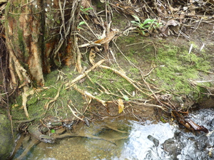

gatew 
/gatɔw/
v.
for the roots of a tree (eggatew, miggatew/inggatew, actor, eg><ø-) to appear on the surface of the earth (eggatawan, inggatawan/miggatawan/piggatawan, location, eg><an-) by heavy rain and flood (iggatew, inggatew, instrument, ig><ø-)
Ka seini iyan sika se eglepew wey egkakita ka dalid te me kayu ne nakalebeng tenged te baggiyu wey duma pad ne eg-ul-uleen te katalunan pinaahi te derakel ne baggiyu, kalamag wey linug.
Eggatew e ka me dalid te me kayu sika te ilis te weyig su malasi egpamaggiyu.
The roots of the trees appearing from always flooding.
Manipis e ka tanè ne Miggatawan te me dalid te kayu puun te naanlas te baggiyu.
The soil is already thin where the roots of the trees appeared by the floods.
Ka dakel ne baggiyu ka iggatew te me dalid te me kayu sika te ilis te beuhan.
The big floods were the reasons of appearing roots of many trees along the river.
Eng. appear; visible; expose
Tag. lumitaw
Ceb. naglutaw; naggimaw
DDP: Visible (2.3.1.5)
Online dict status: -
Usage level: R
Created: 19/Jun/2009
Updated by: QDL,QDL,NJK
Last updated: 30/Jul/2011
This page last updated: 03-Jan-2020
Copyright © 2009-2014, Matigsalug Language Christian Association, Inc